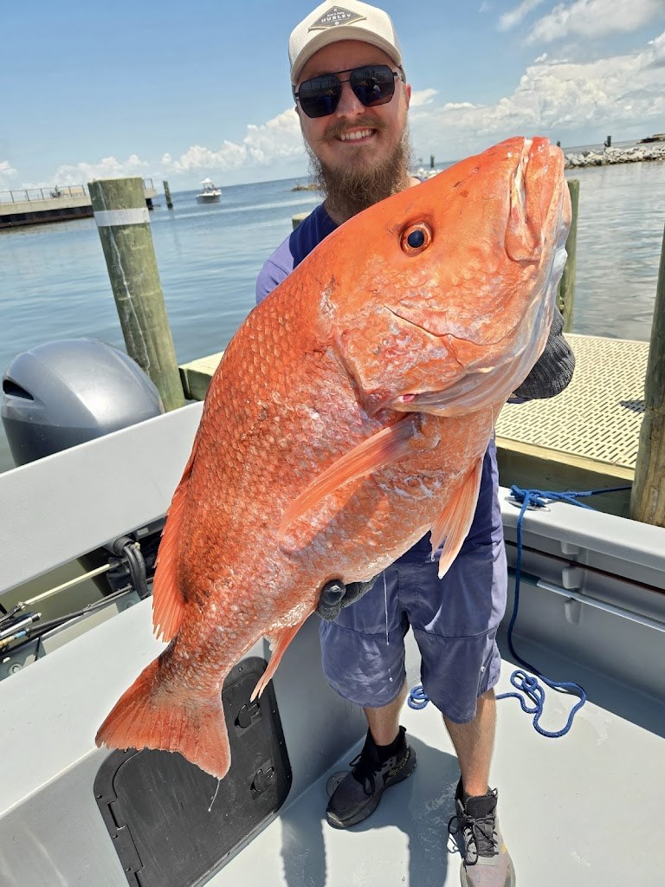
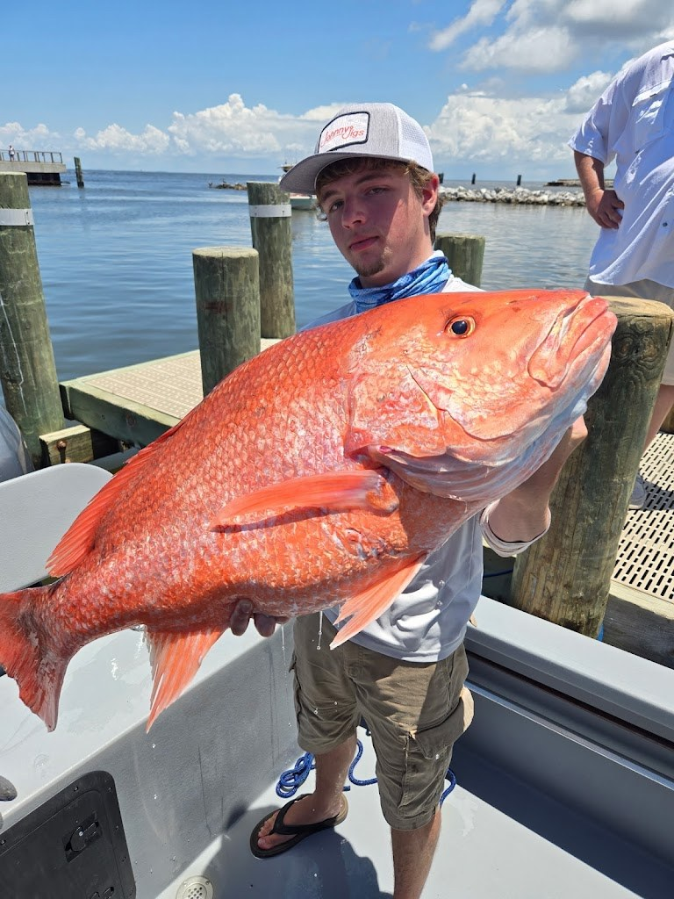
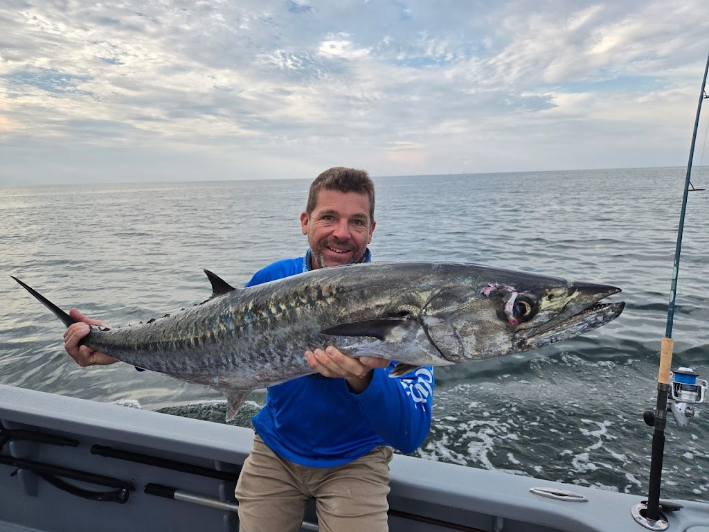

What a trip includes at Island Marine Charters
Guided inshore fishing charters in Gulf Shores with Captain Joe Buskens, on a 29-foot twin-engine center console.
✓
Guided inshore charters
Customized trips with Captain Joe Buskens.
✓
29-foot center console
Trips run on a 29-foot twin-engine center console.
✓
Ice, bait, and tackle included
Ice, bait, and tackle are included.
✓
Rods and reels included
Rods and reels are included.
✓
Fishing license included
A fishing license is included.
✓
Fish cleaning included
Fish cleaning is included.
✓
Eighth-generation local captain
Captain Joe Buskens is an eighth-generation local and Coast Guard licensed.
Gallery



All three photos are real photos from the business's Google Maps listing. They show a bearded man holding a huge red snapper, a young man holding a huge red snapper, and a man holding a large king mackerel on a boat.
Contact
Island Marine Charters serves Gulf Shores, AL. Questions? Call (251) 228-2344.